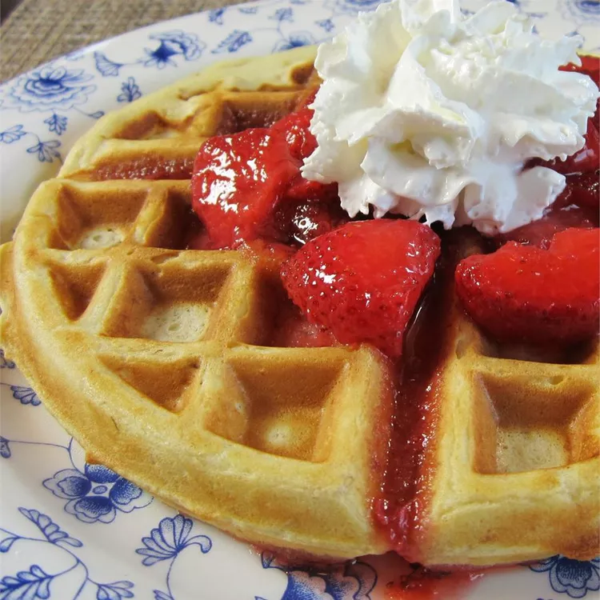

Home
Buttermilk Oatmeal Waffles

Description
This buttermilk oatmeal waffle recipe yields great-tasting waffles.
Ingredients
- 2 1/2 cups all-purpose flour
- 1 1/2 cups rolled oats
- 3 tablespoons white sugar
- 2 tablespoons baking powder
- 1 1/2 teaspoons salt
- 4 large eggs, separated
- 1 1/2 cups buttermilk
- 1 cup milk
- 1/2 cup butter, melted
- 1 1/2 teaspoons vanilla extract